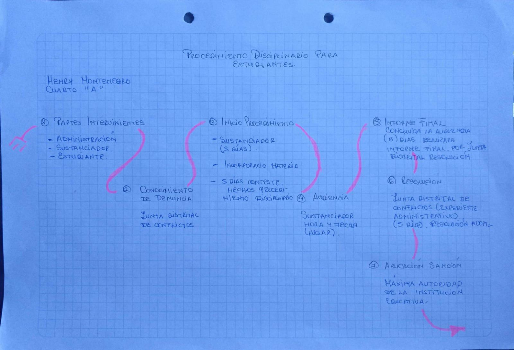

Todo procedimiento disciplinario estudiantil involucra a tres partes intervinientes: la administración de la institución educativa, el sustanciador quien conduce el proceso y el estudiante presuntamente infractor. El proceso arranca formalmente con el conocimiento de la denuncia, que llega a conocimiento de la Junta Distrital de Resolución de Conflictos, encargada de dar seguimiento al expediente desde ese momento.

Del Inicio a la Audiencia
Con la denuncia conocida, se declara el inicio del procedimiento: el sustanciador cuenta con tres días para incorporar la materia al expediente, y el estudiante dispone de cinco días para contestar los hechos que motivaron el proceso. Superada esta fase, el sustanciador fija fecha, hora y lugar para la audiencia, momento central del proceso donde el estudiante ejerce su derecho a la defensa frente a los hechos imputados.
Del Informe Final a la Sanción
Concluida la audiencia, el sustanciador tiene ocho días para elaborar el informe final, que se remite a la Junta Distrital de Resolución de Conflictos. Con el expediente administrativo completo, la Junta cuenta con cinco días para emitir la resolución. Finalmente, es la máxima autoridad de la institución educativa quien ejecuta la aplicación de la sanción resuelta, cerrando así el ciclo del procedimiento.